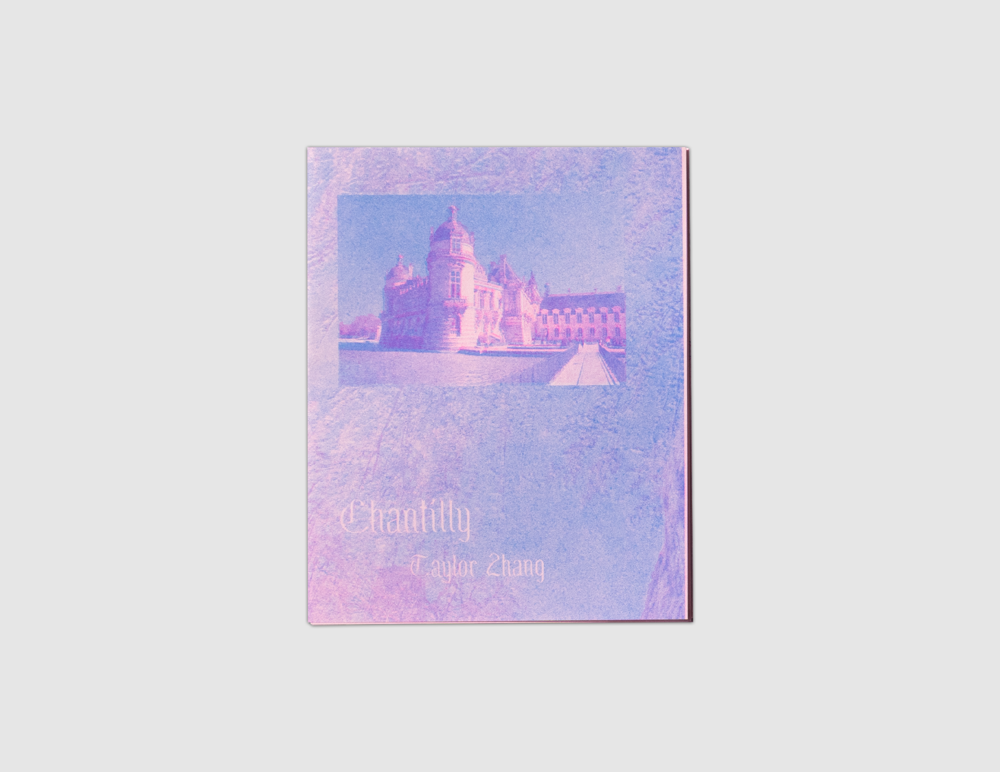
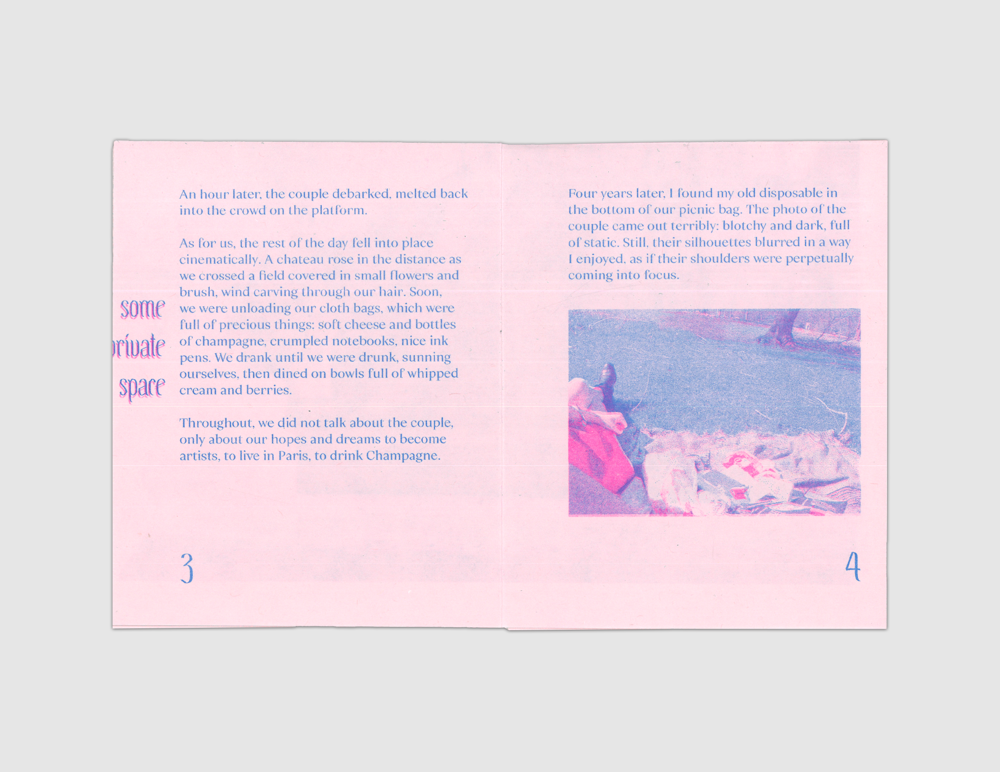

Chantilly
by Taylor Zhang
$5
Shop
- 2020
- 5x4in
- 6 pages
- 2-color riso
- Printed on French paper
- 8-fold zine
- Edition of 250, 3rd edition
The origin story of a friendship founded in sentimentality, make-believe, and champagne.
An impromptu trip to a château forever changes the lives of two young women. As the day unfolds, the pair connect over their ambitions, fears, and the pleasure of an afternoon well spent. An ode to the shared romantic sensibility that fuels a decade-long artistic partnership. Complete with a Risograph-printed poster of the Château de Chantilly, taken on the morning of their excursion.
Taylor Zhang is an educator, writer, and the co-founder of Choo Choo Press, a non-profit publishing project. Her own work can be found in The Massachusetts Review, The Cortland Review, The Vassar Review, and The Drift, among other outlets. Originally from Jackson, Mississippi, she now lives and works in Berlin.

